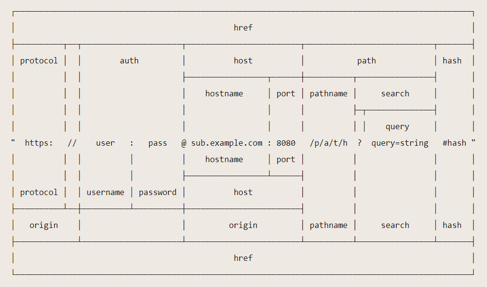

1. 多层继承模板
2.6 美化错误信息页面（可选）
- 1.在
admin/common/创建 error.art - 2.视频里面是单独的页面，而我，想再login.art的基础上；
2.6.1 继承能套吗？
- 1.我在login.art里面写了
{{block 'err'}}{{/block}} - 2.然后在error.art那边写：
1 | {{extend './login.art'}} |
- 3.没有效果；
2.6.2 中间，还尝试了很多办法，包含，或者直接在login.art写html;
- 1.都不行；
2.6.3 后来，我突发奇想：事先在layout，里留下err坑；
- 1.一级继承，login.art不填这个坑
- 2.二级继承，error.art可以填这个坑吗？
1 | // layout.art |
1 | // error.art |
- 3.有效果；
2.6.4 写入node笔记；
2.7 我如何能写进main的div的后面？
1 | // layout.art |
写成：可以吗？
1 | // layout.art |
- 1.实验；
- 没有效果
2. 坑就算不填，写了能二级继承
2.8 如果一级继承没有写上不填坑的X坑，那么二级继承不会X坑；
2.9 反之就会有；
1 | // layout.art |
login.art
1 | <!-- 1.继承骨架模块 --> |
error.art
1 | {{extend './login.art'}} |
3.如果在被继承文件里面，不是那样的格式；
- 1.即使是这样
1 | <body> |
- 2.不是这样
1 | <body> |
3.1 效果也一样；
- 1.是不是可以假设！
- 2.坑在继承中，可以随意调整位置；
- 3.每一个坑，都是单独了一个东西，与包它，和，被它包的坑，没关系；
3.2 但是留坑，必须是原始被继承文件配置，中间的继承文件无法留坑；
3. 如果一级换坑位
1.那么二级会出现两个坑；
2.然而并不是，只是浏览器，或者是本地服务器没有刷新过来；
3.一个坑都没有了；
4.如果保留，原始坑位，复制坑位；效果是怎样？
- 1.原始坑位
1 | {{block 'main'}} |
- 2.login.art继承
1 | <!-- 1.继承骨架模块 --> |
- 3.看有没有效果
4.1 没有效果；
4. 报错；
多重继承好像要报错；
1 | // admin.js:45 |
2. 问题
2.1 自己调用变量
3.2 通过异步函数的方式，获取到异步API查询方法findOne的返回值；
- 1.用变量接收；
1 | // 2. 实现登录功能 |
3.3 如果邮箱存在，user变量类型是对象类型，不存在，为空；
- 1.根据返回值的类型判断
4.报错：一直报错；
1 | UnhandledPromiseRejectionWarning: Error [ERR_HTTP_HEADERS_SENT]: Cannot set headers after they are sent to the client |
将头发送到客户端后无法设置头
- 1.我何时发了什么头？
- 2.结果，一旦有路由过来
let a = res.status(400).send('<h4>邮件地址或密码错误</h4>' + x);
就自动触发，不需要使用就触发了；占用了响应头；
4.1 百度无果，
1.结论：
1.原因：无；
2.结果：
- 1.就是要调用；
2.1 例如app.js里面的
1 | const home = require("./route/home"); |
2.2 虽然home接收了，但右边的，自己也用了；
- 1.相当于：函数名();
- 2.相当于，函数下面，接了一个 函数名();
- 3.运行了这个方法；
2.3 平常，我们感受不到，因为，有些函数，他的返回结果，既不面向前端，也不面向后端。
1.就是一个数据，一个运算。
2.但这些：
res.status(400).send('<h4>邮件地址或密码错误</h4>' + x);3.是响应给服务器的，有没有量接收，服务器都会反应；
2021-5-1 17:07:27
3. 为什么if里就一个量
0.例如：
1 | if (user) { |
1.这是C语言的，应该差不多
C语言里面使用0代表逻辑假，非0代表逻辑真。
if(n)这种写法和if(n!=0)是完全等价的。
因为n=0时，n本身为0就是逻辑假
n!=0时，n本身非0就是逻辑真if(n)只有当n!=0的时候，里面的条件才是逻辑真，才会走到if分支里面。那不就是和n!=0完全等价了？一种省略的写法而已。
3. 路径
1.后端很多路径；
- 2.这个重定向，是与localhost+端口；拼接的；
- 3.模板那些，有模板设置的路径；
- 4.路由那些，也是localhost+端口；二级路由会相对于一级路由的路径；
- 5.静态资源那些，也有设置静态资源根目录；
2.render
2.res.render放到的路径呢？
2.自动拼接，模板路径，模板后缀，模板文件使用哪个模板引擎；这些不都是自己先set了吗？
3.然后把拼接好的结果响应给客户端
4.还有第二个参数，就是向模板中传入的数据；
3.app.engine('art', require('express-art-template'));
- 1.告诉express框架，你使用的模板引擎是什么；什么时候使用（第一个参数）
- engine：引擎；
3.1 告诉模板文件的地方：
1 | // 设置模板存放目录 |
- app.set很有多效果；是用来配置express的
- 1.第一个参数，是配置什么，配置模板的关键字 就是 views；
- 2.第二个参数，是模板的位置信息；推荐写绝对路径；
3.2 设置模板后缀
1 | // 渲染模板时不写后缀 默认拼接art后缀 |
- 1.express可以同时使用多个模板引擎；
- 2.配置模板后缀的关键字：view engine
- 3.当写了这个关键字后，第二个参数，就是后缀名了；
3.2 表单路径
1.表单里面的 相对路径，跟url的host后面拼接；

4. req.body
1.是啥来着？
1.1 app.use(bodyParser.urlencoded({ extended: false }));
- 1.抢先在所有请求前，先用bodyParser下的urlencoded方法处理；
- 2.该方法会检测当前请求中是否有请求参数，如果有，会接收请求参数，处理成对象类型；
- 3.然后再为req对象，添加一个属性，属性的名字是body，并把请求参数的值，赋值了req.body
- 4.最后在方法内部，调用了next()方法，将请求控制权，交给了下一个中间件
- 5.所以，在接下来的路由中，我们可以通过req.body拿到这个对象类型的请求参数。
1.2 出至：15.1-6.3.3 post参数获取
5. res.render
1.渲染一个view带有响应的回调，该回调以渲染的字符串作为响应。当发生错误时，next(err) 在内部调用。提供回调时，可能的错误和呈现的字符串都将传递，并且不会执行自动响应。
1 | res.render('index', function(err, html){ |
1.1 res.render(view, [locals], callback)
2.
- 1.为了使用res.render[^16]
- 2.是res，是响应下的方法；
- 3.在方法内部，做了很多事情；
- 1.里面写模板名称。
- 2.自动拼接，模板路径，模板后缀，模板文件使用哪个模板引擎；这些不都是自己先set了吗？
- 3.然后把拼接好的结果响应给客户端
- 4.还有第二个参数，就是向模板中传入的数据；
15.1-6.3-7
5.1 官方
1.http://expressjs.com/en/api.html#res.render
2.呈现aview并将呈现的HTML字符串发送到客户端。可选参数：
locals，一个对象，其属性定义视图的局部变量。callback，一个回调函数。如果提供了该方法，则该方法将同时返回可能的错误和呈现的字符串，但不会执行自动响应。发生错误时，该方法在next(err)内部调用。
该view参数是一个字符串，它是视图文件来渲染的文件路径。这可以是绝对路径，也可以是相对于views设置的路径。如果路径不包含文件扩展名，则该view engine设置确定文件扩展名。如果路径中确实包含文件扩展名，则Express将（通过require()）为指定的模板引擎加载模块，并使用加载的模块的__express功能对其进行呈现。
有关更多信息，请参阅将模板引擎与Express结合使用。
注意：该view参数执行文件系统操作，例如从磁盘读取文件并评估Node.js模块，因此出于安全原因，不应包含最终用户的输入。
局部变量cache启用视图缓存。将其设置为true，以在开发过程中缓存视图；默认情况下，生产中启用了视图缓存。
1 | // send the rendered view to the client |
6. 模板与模板引擎
${}与{{}}`
1. `${}`是模板的语法，那`{{}}呢
- 1.
${}是ES6模板字符串的语法，{{好像是模板引擎的}}
2021-5-2 10:52:50
2.但具体下一步，搜索：模板字符串 里的 美元符号 是什么意思；
- 1.百度不到；
7. res.send
res.send（[body]）
发送HTTP响应。
所述body参数可以是一个Buffer对象，一个String，对象，Boolean或Array。例如：
1 | res.send(Buffer.from('whoop')) |
此方法对简单的非流式响应执行许多有用的任务：例如，它自动分配Content-LengthHTTP响应标头字段（除非先前定义），并提供自动的HEAD和HTTP缓存新鲜度支持。
当参数为Buffer对象时，该方法将Content-Type 响应头字段设置为“ application / octet-stream”，除非事先定义如下所示：
1 | res.set('Content-Type', 'text/html') |
当参数为a时String，该方法将设置Content-Type为“ text / html”：
1 | res.send('<p>some html</p>') |
当参数为Array或时Object，Express将以JSON表示形式进行响应：
1 | res.send({ user: 'tobi' }) |
2. 中断
没有中断效果，会继续执行下面的代码；只是显示效果拦截
8. 论文重温
1.在写论文的过程中，有对代码有一些问题；2021-5-3 22:29:44
2.在写这个笔记之前，就已经做了很多了，都没笔记，虽然都自己会做；
- 1.但还是写几笔思路比较好，因为我现在，都记不起刚才遇到的什么问题了；2021-5-3 22:30:37
3.